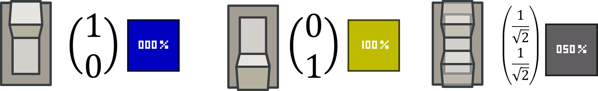

Maths
There is a lot more to a qubit’s state than just it’s probability however. Each qubit on its own is stored with two numbers. (
It gets even more complicated when qubits interact with each other.)

If you square the top number, you get the probability that when
measured, this qubit will be on. If you square the bottom number, you get the probability that when
measured, this qubit will be off.
These numbers can also be negative or complex. (If it is complex, the magnitude squared is the probability.)
Maths
The
hadamard gate (and most other gates) can be represented by a matrix.
When you apply the gate, you multiply the matrix for the gate by the
vector for the qubit.
Notice if you apply a
hadamard gate to (√0.5 𝑂𝐹𝐹+ √0.5 𝑂𝑁), the 𝑂𝑁s cancel, making the qubit 100% off.
Notice also that applying the
hadamard gate twice will always do nothing.
Maths
When there are two qubits involved instead of each being represented by a
2d vector we represent both in one 4d vector.
Thus a
controlled not gate can be written using the following matrix:
 The qubit block is the most important block in the mod, as all other blocks connect to it. The qubit block represents one quantum switch, which can be on, off or a combination of the two. The number on the block shows the probability that it will be on when measured (rounded to the nearest 10%).
The qubit block is the most important block in the mod, as all other blocks connect to it. The qubit block represents one quantum switch, which can be on, off or a combination of the two. The number on the block shows the probability that it will be on when measured (rounded to the nearest 10%).